청소년상담사-2급(1교시) (2016-10-01 기출문제)
1과목: 청소년 상담의 이론과 실제
1. 교류분석에서 말하는 자기부정-타인긍정의 생활자세에 관한 설명으로 옳은 것은?
- 자신의 문제를 타인에게 투사한다.
- 자신을 무기력하게 느끼며, 간접적 공격성을 표출하는 경향이 높다.
- 공격적이고 허세가 심하며, 세상에 대해 방어적 자세를 취한다.
- 긍정적 감정을 유지하기 위해 누군가를 희생자로 삼으려 한다.
- 사람에 대한 흥미를 잃어버리고, 인간을 가망성 없는 존재로 본다.
(정답률: 92%)

2. 펄스(F. Perls)가 정의한 신경증의 다섯 층 중 폭발층에 관한 설명으로 옳은 것은?
- 내담자가 겁에 질려서 보지도 듣지도 못하며, 곤경, 상실, 공허함에 대한 공포를 경험한다.
- 억압해 왔던 파괴적 에너지가 내적 폭발을 하는 단계로 가짜 주체성이 무너지기 시작한다.
- 진실한 자기와 접촉하여 자신의 진정한 감정과 욕구를 외부대상에게 직접 표현한다.
- 그 동안 억압하고 차단해 왔던 욕구와 감정을 알아차리게 된다.
- 환경에 적응하기 위해서 자신의 욕구를 억압하고, 주위에서 바라는 대로 살아야 한다는 믿음을 진정한 자신의 욕구로 착각하며 산다.
(정답률: 67%)
3. 청소년기의 인지발달특성에 관한 설명으로 옳지 않은 것은?
- 언어와 시각정보 같은 상징적 표현체계를 가지고 지식체계를 구성할 수 있다.
- 정보습득과 문제해결을 위한 효과적인 책략을 발견하는 통찰력을 가진다.
- 한 특정 사건으로부터 다른 특정 사건을 추론하는 전환적 추론을 하게 된다.
- 가설-연역적 사고의 발달로 추상적 사고를 할 수 있다.
- 가설설정 능력은 완벽한 세상에 대한 비전을 세우는 이상주의적 사고로 확장된다.
(정답률: 56%)
4. 개인심리학의 '가상적 목표' 개념 형성에 영향을 준 철학자는?
- 바이힝거(H. Vaihinger)
- 안스바허(H. Ansbacher)
- 하이데거(M. Heidegger)
- 헤링톤(G. Harrington)
- 빈스방거(L. Binswanger)
(정답률: 62%)
5. 실존치료자들의 공통된 인간관에 관한 설명으로 옳지 않은 것은?
- 인간은 계속해서 되어가는 존재이다.
- 인간은 자기인식의 능력을 지닌 존재이다.
- 인간은 존엄성과 가치를 지닌 존재이다.
- 인간은 비합리적이며 본능적 충동에 의해 행동하는 존재이다.
- 인간은 실존적으로 단독자이면서 타자와의 관계를 추구하는 존재이다.
(정답률: 96%)
6. 인지치료관점에서의 정신병리에 관한 설명으로 옳지 않은 것은?
- 부적응적 증상은 개인적 삶의 경험과 자기개념의 불일치에서 생겨난다.
- 비현실적인 부정적 인지가 부적응적 증상을 유발한다.
- 정신장애의 유형은 자동적 사고의 주제와 밀접하게 관련되어 있다.
- 정신병리는 개인이 현실을 정확하게 인식하지 못하고 과장하거나 왜곡할 때 생겨난다.
- 정상과 정신병리는 연속선상의 차이에 의해 구별되는 것으로 본다.
(정답률: 71%)
7. 다음과 같이 반응한 상담자가 사용한 상담기법은?
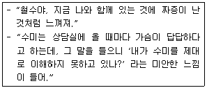
- 해석
- 반영
- 초점화
- 명료화
- 즉시성
(정답률: 74%)
8. 인터넷 중독 청소년을 상담할 때 상담자가 사용할 수 있는 효과적 방법을 모두 고른 것은?
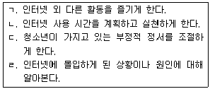
- ㄱ, ㄴ
- ㄱ, ㄷ
- ㄴ, ㄹ
- ㄱ, ㄴ, ㄷ
- ㄱ, ㄴ, ㄷ, ㄹ
(정답률: 96%)
9. 상담자가 사용한 상담기술에 관한 설명으로 옳지 않은 것은?
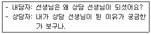
- 내담자가 자신의 진술내용에 초점을 맞추게 한다.
- 상담자가 내담자의 이야기를 경청하고 있음을 보여 준다.
- 내담자의 생각, 의견, 경험을 구체화 시켜준다.
- 내담자가 자신의 이야기를 보다 상세하게 말하도록 격려한다.
- 다양한 상황에서 유발되는 행동패턴의 인식을 통해 자신에 대해 긍정적인 시각을 갖게 한다.
(정답률: 88%)
10. 상담자는 S군이 자신의 폭력행동 뒤에 숨겨진 부적절한 의도나 목적을 알게 되면 폭력행동으로부터 자신을 분리시킬 수 있게 될 것이라 생각하여, S군에게 폭력행동을 유발하는 그의 내면적 동기와 그 행동의 감춰진 목적을 알려주었다. 이 상담자가 사용한 상담기술은?
- 수프에 침뱉기
- 수렁피하기
- 단추누르기
- 대처질문
- 정보제공
(정답률: 60%)
11. 미술활동을 매개로 한 상담의 장점을 모두 고른 것은?
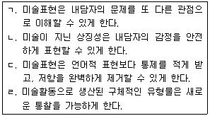
- ㄱ, ㄴ
- ㄷ, ㄹ
- ㄱ, ㄴ, ㄹ
- ㄴ, ㄷ, ㄹ
- ㄱ, ㄴ, ㄷ, ㄹ
(정답률: 85%)
12. 상담자가 내담자에게 “그 친구를 떠올리면 분노가 치밀어 오르나요?” 라고 물었다. 이 질문유형의 장점을 모두 고른 것은?
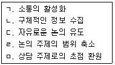
- ㄱ, ㄴ
- ㄱ, ㄷ, ㄹ
- ㄴ, ㄷ, ㄹ
- ㄴ, ㄹ, ㅁ
- ㄴ, ㄷ, ㄹ, ㅁ
(정답률: 72%)
13. 내담자가 두려워하는 일을 하도록 하거나 그런 일이 일어나기를 소망하도록 격려하여, 내담자가 자신의 증상에 대해 덜 걱정하도록 돕는 기법은?
- 기적질문
- 마술지팡이
- 역설적 의도
- 외재화
- 위험 무릅쓰기
(정답률: 88%)
14. 청소년 내담자의 특징으로 옳지 않은 것은?
- 비자발적으로 참여하는 경우가 많다.
- 상담자를 부정적으로 지각하는 경향이 있다.
- 감각적 흥미와 재미를 추구하는 경향이 있다.
- 급격한 신체ㆍ생리적 변화에 상응하지 못하는 정서적 발달에 따른 불균형이 나타난다.
- 에릭슨(E. Erikson)에 따르면 주도성이 형성되는 시기로, 억압과 처벌이 심하게 되면 죄책감이 형성된다.
(정답률: 96%)
15. 라자루스(A. Lazarus)의 BASIC-ID 영역과 그것을 평가하기 위한 질문으로 옳은 것을 모두 고른 것은?
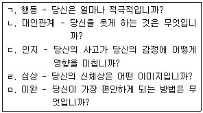
- ㄱ, ㄴ, ㄷ
- ㄱ, ㄷ, ㄹ
- ㄴ, ㄷ, ㄹ
- ㄴ, ㄹ, ㅁ
- ㄷ, ㄹ, ㅁ
(정답률: 47%)
16. 정신분석 상담에 관한 설명으로 옳지 않은 것은?
- 신경증적 불안은 주로 초자아와 관련되어 있다.
- 훈습에는 내담자의 저항을 정교하게 탐색하는 과정이 포함된다.
- 상담자의 해석은 내담자의 방어기제와 저항에 대한 통찰을 얻게 한다.
- 역전이는 상담자가 내담자에게 일으키는 전이현상으로 상담의 진전을 방해할 수 있다.
- 상담목표는 내담자의 불안을 야기하는 억압된 충동을 자각하게 하는 것이다.
(정답률: 86%)
17. 다음 ㄱ, ㄴ을 주장하는 여성주의 학자는? (순서대로 ㄱ, ㄴ)
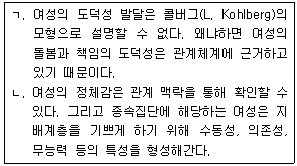
- 길리건(C. Gilligan), 벰(S. Bem)
- 길리건(C. Gilligan), 밀러(J. Miller)
- 밀러(J. Miller), 벰(S. Bem)
- 벰(S. Bem), 밀러(J. Miller)
- 길리건(C. Gilligan), 브라운(D. Brown)
(정답률: 81%)
18. REBT상담에서 비합리적 사고의 요소로 옳은 것을 모두 고른 것은?
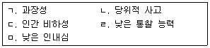
- ㄱ, ㄹ
- ㄴ, ㄷ
- ㄴ, ㄷ, ㄹ
- ㄱ, ㄴ, ㄷ, ㅁ
- ㄱ, ㄴ, ㄷ, ㄹ, ㅁ
(정답률: 58%)
19. 청소년상담에 관한 설명으로 옳지 않은 것은?
- 청소년의 발달단계, 환경, 호소문제는 성인과 다른 특징을 갖는다.
- 다른 대상을 위한 상담과 구분되는 독특한 상담방법의 개발이 필요하다.
- 발달을 촉진하기 위해 압력을 가하는 개입이 필요하다.
- 청소년이 사회에 잘 적응하고 잠재가능성을 최대한 실현하도록 도와야 한다.
- 청소년들이 원하는 것을 적절한 방법으로 제공하여, 그들이 행복하게 살아갈 수 있도록 도와야 한다.
(정답률: 100%)
20. 다음의 청소년상담사 윤리강령들이 속한 항목은?
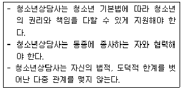
- 진실성
- 비밀보장
- 타인 복지에 대한 관심
- 청소년상담사로서의 전문적 자세
- 윤리적 문제의 해결
(정답률: 77%)
21. 상담 초기단계에서 상담자가 해야 할 주요과제는?
- 저항 다루기
- 상담의 구조화
- 목표 달성도 평가
- 새로운 행동 실행 촉진
- 내담자의 자기 확장
(정답률: 92%)
22. 청소년상담의 특성으로 옳지 않은 것은?
- 청소년상담에는 건강한 발달과 성장을 돕는 예방적ㆍ교육적 측면이 포함된다.
- 청소년은 성장과정의 연속선상에 있다는 점을 염두에 두어야 한다.
- 청소년에게 생태학적 환경은 큰 비중을 차지하므로, 환경의 재적응을 돕는 것이 필요하다.
- 청소년은 아동과 달리 부모와 분리될 수 있는 연령이므로, 부모의 역할을 강조할 필요가 없다.
- 청소년이 자신의 정서를 언어로 표현하는 데 한계가 있는 경우, 놀이치료의 형태로 상담을 하는 것이 효과적일 수 있다.
(정답률: 97%)
23. 코미어(W. Cormier)와 코미어(L. Cormier)가 제시한 상담자의 자질 중 다음에서 설명하고 있는 자질은?
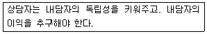
- 온정
- 에너지
- 융통성
- 자기인식
- 지적 능력
(정답률: 75%)
24. 이건(G. Egan)이 제시한 경청의 자세로 옳은 것을 모두 고른 것은?
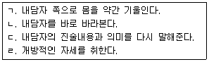
- ㄱ, ㄷ
- ㄴ, ㄹ
- ㄱ, ㄴ, ㄹ
- ㄴ, ㄷ, ㄹ
- ㄱ, ㄴ, ㄷ, ㄹ
(정답률: 27%)
25. 다음에서 설명하는 청소년상담의 목표는?
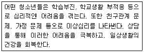
- 삶의 지혜
- 문제 해결
- 성장 촉진
- 탁월성 성취
- 문제발생 예방
(정답률: 79%)
2과목: 상담연구방법론의 기초
26. 연구변인을 조작적으로 정의하는 이유로 볼 수 없는 것은?
- 조사연구의 타당한 측정도구를 만들기 위해
- 실험연구의 내적타당도를 높이기 위해
- 선행연구와의 차별성을 높이기 위해
- 후속연구의 발전가능성을 높이기 위해
- 연구참여자 간의 명확한 의사소통을 위해
(정답률: 58%)
27. 정규분포를 가정하며 평균 100, 표준편차 15, 신뢰도 0.84인 척도에 관한 설명으로 옳지 않은 것은?
- 측정의 표준오차는 6이다.
- 이 척도에서 100점을 얻은 사람의 진점수가 대략 94~106점 사이에 있을 가능성이 95%이다.
- 관찰점수 분산에 대한 오차점수의 분산비율은 0.16이다.
- 이 척도의 규준집단에서 약 95%는 70~130점을 받았다고 볼 수 있다.
- 관찰점수 분산에 대한 진점수의 분산비율은 0.84이다.
(정답률: 34%)
28. 상담연구가 필요한 상황을 모두 고른 것은?
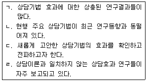
- ㄱ, ㄴ
- ㄴ, ㄷ
- ㄱ, ㄴ, ㄷ
- ㄱ, ㄷ, ㄹ
- ㄱ, ㄴ, ㄷ, ㄹ
(정답률: 88%)
29. 두 상담방법을 비교하기 위해 두 집단을 대상으로 상이한 방법으로 상담을 실시하고, 상담효과를 세 차례 측정했을 때 사용가능한 '혼합 설계'에 관한 설명으로 옳은 것은?
- 내담자들은 상담방법에 내재된 상태로서, 두 상담방법 모두를 경험한다.
- 세 번의 측정결과들은 서로 무관하지 않기 때문에 종속된 상태로 간주된다.
- 피험자 집단은 측정수준에 교차되기 때문에 이들의 상호작용효과를 알 수는 없다.
- 피험자 간 효과와 피험자 내 효과를 계산할 때 오차항이 다르지 않다.
- 한 집단에 10명의 내담자만 있어도 된다면 이 연구에 필요한 내담자 수는 60명이다.
(정답률: 50%)
30. 10명의 학생을 대상으로 3명의 교사가 7점 서열척도로 학생의 지도성을 평정한 결과, 세 측정값의 차이를 검정하는데 가장 적합한 것은?
- 윌콕슨(Wilcoxon) 검정
- 프리드만(Friedman) 이원분산분석
- 크루스칼-발리스(Kruskal-Wallis) 일원분산분석
- 맨-휘트니(Mann-Whitney) 검정
- 콜모고로프-스미르노프(Kolmogorov-Smirnov) 검정
(정답률: 73%)
31. 다음 중 연구 패러다임이 다른 하나는?
- 사회적 실재는 객관적으로 존재한다고 가정한다.
- 기계론적 인과론을 갖고 있다.
- 행위 또는 관찰가능한 현상을 주로 연구한다.
- 해석학 또는 현상학적 인식론의 입장에서 인간을 연구한다.
- 모집단 전체 또는 모집단을 대표하는 표본집단을 대상으로 연구한다.
(정답률: 46%)
32. '상담방법에 따른 내담자의 사회성 발달의 차이'를 연구하는데, 상담의 효과가 사회성에 직접적으로 나타나기보다는 자아개념을 통해 구현되고 상담방법의 효과는 성별과 상호작용을 일으킬 것으로 가정했으며, 내담자의 사회심리적 배경의 차이는 배제하고 싶을 때, 다음 중 적절히 규정되지 못한 변인은?
- 상담방법: 결과변인
- 사회성: 종속변인
- 자아개념: 매개변인
- 성: 조절변인
- 사회심리적 배경: 통제변인
(정답률: 75%)
33. 척도 (평균 10.0, 표준편차 3.0)의 예측타당도를 추정하기 위해 준거척도 (평균 3.0, 표준편차 1.0)와의 상관을 계산한 결과 =0.6으로 나타났다. 이에 관한 설명으로 옳은 것은?
- 척도 A에서 타당하지 못한 점수의 분산비율은 0.4이다.
- 척도 A에서 준거척도 와 공유하는 점수의 분산은 9.0이다.
- 척도 A에서 준거척도 와 공유하지 않는 점수의 분산은 0.6이다.
- 척도 A에서 준거척도 와 공유하는 점수의 분산비율은 0.36이다.
- 척도 A의 점수로 준거척도 의 점수를 예언할 때, 예언된 점수와 실제점수 간 차이의 표준편차는 1.0이다.
(정답률: 30%)
34. '자기존중감'과 '회복탄력성'이 서로 구분되는 독특한 구인인지 알아보기 위해 활용한 분석법으로 옳은 것은?
- 종속변수와의 단순상관이 높은 변수를 먼저 투입하는 방식으로 회귀분석을 실시한다.
- 두 변수의 분산이 동일하다고 볼 수 있는지를 카이자승으로 검정한다.
- 종속변수에 대한 두 변수의 주효과가 유의한지를 분산분석으로 검정한다.
- 두 변수를 모두 투입했을 때 나타나는 설명량 값이 유의한지를 표준 회귀분석으로 검정한다.
- 두 번째 변수를 투입한 후 나타난 설명량의 증가()가 통계적으로 유의한지를 위계적 회귀분석으로 검정한다.
(정답률: 32%)
35. 네 개의 연구 가설(H1, H2, H3, H4)을 검정한 결과 두 개의 가설(H3, H4)만 지지되었는데, 지지된 두 가설과 함께 새로운 가설들(H5, H6)을 다시 검정한 결과 H4만 지지되었을 때, 연구자가 내릴 수 있는 타당한 결론은?
- 가설 H1이 H2보다 더 타당하다.
- 가설 H1이 H6보다 더 타당하다.
- 가설 H2가 H6보다 더 타당하다.
- 가설 H4가 H5보다 더 타당하다.
- 가설 H5가 H6보다 더 타당하다.
(정답률: 87%)
36. 실험연구의 내적타당도를 높이기 위해 사용 가능한 외래변수의 통제방법들을 모두 고른 것은?
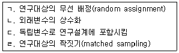
- ㄱ, ㄴ
- ㄱ, ㄷ
- ㄴ, ㄷ
- ㄴ, ㄷ, ㄹ
- ㄱ, ㄴ, ㄷ, ㄹ
(정답률: 63%)
37. 집단 간 설계에 비해 집단 내 설계가 갖는 장점을 모두 고른 것은?
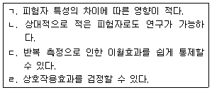
- ㄱ, ㄴ
- ㄴ, ㄷ
- ㄷ, ㄹ
- ㄱ, ㄴ, ㄹ
- ㄱ, ㄴ, ㄷ, ㄹ
(정답률: 43%)
38. 학생의 '와해된 행동량'과 교사의 '실패 예측' 간에 정도의 단순상관이 계산되었지만, 또 다른 변수인 '학급 능력 수준'과 두 변수 간의 단순상관들이 각각 정도를 보였다면, 예상되는 두 변수('와해된 행동량'과 '실패 예측') 간의 편상관(partial correlation)은?
- 완벽한 정적상관
- 완벽한 부적상관
- 단순상관 보다 높지 않은 정적상관
- 단순상관 보다 높은 정적상관
- 단순상관 보다 높은 부적상관
(정답률: 50%)
39. 연구보고서 작성에 관한 설명으로 옳지 않은 것은?
- 서론은 이론에서 연구문제를 도출하는 귀납적 방식으로 기술한다.
- 연구가설은 탐색적 질문과 검정을 위한 질문으로 구성할 수 있다.
- 선행연구 결과를 인용할 경우 반드시 출처를 밝혀야 한다.
- 연구결과는 논문의 구성내용 중 가장 객관적이어야 한다.
- 결론 및 논의에는 자신이 수행한 연구결과의 요약이 포함된다.
(정답률: 82%)
40. 진실험설계와 비교하여 준실험설계가 갖는 특성을 모두 고른 것은?
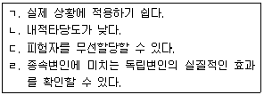
- ㄱ, ㄴ
- ㄴ, ㄷ
- ㄱ, ㄴ, ㄷ
- ㄱ, ㄴ, ㄹ
- ㄴ, ㄷ, ㄹ
(정답률: 73%)
41. 연구의 오차 및 오염변인의 효과를 통제하는 방법으로 옳은 것은?
- 오염변인이 질적변수일 경우 공분산분석을 실시한다.
- 무선구획설계를 하여 오염변인의 효과를 통제한다.
- 피험자간 설계로 개인차를 통제한다.
- 다양한 피험자를 연구대상으로 선발한다.
- 실험실 연구보다 현장연구를 실시한다.
(정답률: 48%)
42. 연구주제와 연구방법 및 분석방법의 관계가 적절하지 않은 것은?
- 심리치료 효과 검증 - 단일사례연구
- 내담자의 변화를 이끄는 상담변인의 원인 규명 - 상관연구
- 특정 상담 주제에 대한 성과 연구 - 메타분석연구
- 상담효과 연구 - 실험연구
- 희귀 사례의 특성 연구 - 질적연구
(정답률: 30%)
43. 다음 중 성격이 다른 표집방법은?
- 군집표집
- 다단계표집
- 체계적 표집
- 층화표집
- 할당표집
(정답률: 55%)
44. '직면이 대학생의 발표불안 감소에 미치는 효과'를 연구하기 위해 대학 홈페이지에 공지하여 모집한 10명의 참가자를 대상으로 6회기의 상담프로그램을 진행하고, 심리학개론 수강생 10명을 통제집단으로 운영하였다. 매회기 종료 후 발표불안 검사를 하였으며, 일부 참가자가 중도에 그만두어, 연구집단 6명, 통제집단 8명의 자료를 분석에 사용하였다. 이 연구에서 내적타당도를 위협하는 요인을 모두 고른 것은?
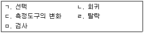
- ㄱ, ㄹ
- ㄴ, ㄷ
- ㄹ, ㅁ
- ㄱ, ㄷ, ㄹ
- ㄱ, ㄹ, ㅁ
(정답률: 67%)
45. 다음에 해당하는 연구설계는?
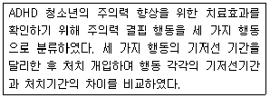
- 일회적 집단설계
- AB 설계
- 가역 설계
- 다중-기저선 설계
- 교대-처치 설계
(정답률: 84%)
46. 측정의 신뢰도와 타당도에 관한 설명으로 옳지 않은 것은?
- Cronbach's 계수로 신뢰도를 계산한다.
- 타당도는 '무엇을 측정하는가'와 관련된다.
- 요인분석으로 내용타당도를 확인한다.
- 측정도구의 문항수가 신뢰도에 영향을 준다.
- 중다특성-중다방법으로 수렴-변별 타당도를 확인한다.
(정답률: 50%)
47. 상담방법의 효과를 확인하기 위해 3집단에게 상담을 실시한 후 효과를 분석한 결과가 다음과 같다. 효과의 크기(η2)는?
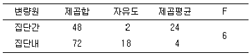
- 0.4
- 0.6
- 0.67
- 0.86
- 0.9
(정답률: 29%)
48. 다음 질적연구방법 중 접근방법이 다른 것은?
- 연구대상은 동질적인 표본으로 구성한다.
- 범주 구분을 위해 개방코딩을 사용한다.
- 현장에서 나온 자료를 토대로 이론을 개발한다.
- 비전형적인 사례가 주요 대상이다.
- 시각적인 도형이나 모형을 사용한다.
(정답률: 25%)
49. '인지적 가족치료가 가족구성원의 의사소통에 미치는 효과'를 연구하기 위해 총 10가족에게 6회기 가족상담을 진행하고, 매회기 내담자들의 의사소통 패턴을 측정하였다. 이 연구에 가장 적절한 분석방법은?
- 대응표본 t검정
- 이원분산분석
- 단순회귀분석
- 반복측정 분산분석
- 공분산분석
(정답률: 40%)
50. '대학생의 데이트 성폭력 피해경험과 대처방식에 관한 연구'를 진행하기 위해 심리학개론을 수강하는 학생들을 대상으로 설문지를 이용한 연구를 진행하고자 할 때 옳은 것은?
- 실험이 아닌 설문조사이므로, 기관윤리심의기구(IRB)의 동의를 얻지 않고 조사를 수행한다.
- 동기부여를 위해 참가자에게만 추가점수를 부여한다.
- 연구주제를 사전 공지한 후, 참여 의사를 밝힌 학생들만을 대상으로 연구를 진행한다.
- 연구주제의 노출을 막기 위해 연구주제에 관한 정보를 제외하고 참가자에게 동의를 구한다.
- 대상자 선발을 위해 데이트 성폭력 피해경험 여부를 확인한 후, 해당 학생에게 연락하여 참여 동의를 구한다.
(정답률: 52%)
3과목: 심리측정 평가의 활용
51. 심리검사의 역사를 연도순으로 바르게 나열한 것은?
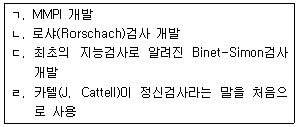
- ㄷ - ㄹ - ㄱ - ㄴ
- ㄷ - ㄹ - ㄴ - ㄱ
- ㄹ - ㄴ - ㄱ - ㄷ
- ㄹ - ㄷ - ㄱ - ㄴ
- ㄹ - ㄷ - ㄴ - ㄱ
(정답률: 62%)
52. 심리측정에 관한 설명으로 옳은 것을 모두 고른 것은?
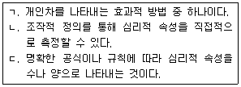
- ㄱ
- ㄱ, ㄴ
- ㄱ, ㄷ
- ㄴ, ㄷ
- ㄱ, ㄴ, ㄷ
(정답률: 61%)
53. 심리검사에 관한 설명으로 옳은 것은?
- 결과의 개인 간 비교가 불가능하다.
- 결과의 개인 내 비교가 불가능하다.
- 심리적 구성개념을 측정하는 방법은 한 가지만 있다.
- 전체 행동이 아닌 일부 표집된 행동을 대상으로 한다.
- 심리적 구성개념은 조작적으로 완벽하게 정의할 수 있다.
(정답률: 86%)
54. 검사문항을 작성하는 과정에서 일반적으로 주의해야 할 사항이 아닌 것은?
- 명확하고 간단한 문장을 쓴다.
- 이해하기 쉬운 단어를 사용한다.
- 문장은 가능한 한 과거시제로 작성한다.
- 두 가지 이상의 의미로 해석될 수 있는 문장은 가급적 피한다.
- 전체 긍정어나 전체 부정어(예: 항상, 절대로)를 포함하는 문장은 가급적 피한다.
(정답률: 88%)
55. 표준편차에 관한 설명으로 옳은 것은?
- 극단치에 민감하다.
- 중심경향치 지수 중 하나이다.
- 분산이 클수록 표준편차는 작아진다.
- 표준편차가 작을수록 점수의 분포는 이질적이다.
- 정규분포를 이룬다면 평균으로부터 ±2표준편차는 전체 사례의 약 90%를 포함한다.
(정답률: 42%)
56. K-WAIS-IV에서 전체검사(Full Scale) IQ가 115일 때 이에 해당하는 T점수는?
- 50
- 55
- 60
- 65
- 70
(정답률: 53%)
57. K-WISC-IV에서 역순(되돌아가기) 규칙이 있는 소검사는?
- 숫자
- 기호쓰기
- 순차연결
- 동형찾기
- 행렬추리
(정답률: 25%)
58. 길포드(J. Guilford)의 지능구조모형(Structure-of-Intellect Model)에 관한 설명으로 옳지 않은 것은?
- 지능구조의 3차원 모델을 제시했다.
- 확산적 사고는 창의성과 밀접한 관련이 있다.
- 써스톤(L. Thurstone)의 다요인설을 확대했다.
- 모형의 '조작'과정에 체계적 사고와 전환적 사고가 포함된다.
- 지능을 다양한 방법으로 상이한 종류의 정보를 처리하는 능력들의 체계적인 집합체로 보았다.
(정답률: 43%)
59. 다음 로샤(Rorschach)검사의 반응에서 운동반응을 올바르게 기호화한 것은?
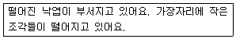
- ma
- mp
- Ma
- Mp
- FMa
(정답률: 50%)
60. 로샤(Rorschach)검사의 람다(Lambda)값에 관한 설명으로 옳은 것을 모두 고른 것은?
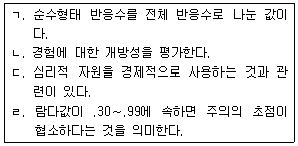
- ㄱ, ㄴ
- ㄴ, ㄷ
- ㄷ, ㄹ
- ㄱ, ㄴ, ㄷ
- ㄱ, ㄴ, ㄹ
(정답률: 36%)
61. 주제통각검사(TAT) 도판 1의 일반적인 주제로 가장 거리가 먼 것은?
- 성취욕구
- 성취를 이루는 방식
- 부모의 요구에 대한 반응
- 부모에 대한 애정욕구
- 자율과 권위에 대한 순응 간의 갈등
(정답률: 56%)
62. HTP검사 실시방법에 관한 설명으로 옳은 것은?
- 그림을 그리는데 있어 제한시간은 각 그림 당 5분이다.
- '집' 그림의 경우, 수검자에게 종이를 세로로 제시한다.
- '사람' 그림의 경우, 수검자에게 종이 2장을 같이 제시해야 한다.
- '사람' 그림의 경우, 수검자와 동일한 성부터 그리게 한다.
- '나무' 그림의 경우, 수검자에게 종이를 세로로 제시한다.
(정답률: 56%)
63. 허트(M. Hutt)의 채점기준에 따라, BGT 도형A를 모사한 아래 그림에서 나타나는 곤란반응은?
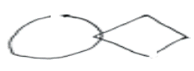
- 폐쇄(closure)곤란
- 교차(crossing)곤란
- 곡선(curvature)곤란
- 정교화(elaboration)곤란
- 단순화(simplification)곤란
(정답률: 80%)
64. MMPI-2의 타당도 척도에 관한 설명으로 옳은 것은?
- 무작위로 반응하면 F척도와 TRIN의 T점수가 상승한다.
- 모든 문항에 '아니다'로 반응하면 TRIN의 T점수가 상승한다.
- VRIN은 내용이 상반되는 문항 쌍으로만 구성되어 있다.
- VRIN과 TRIN의 T점수가 모두 상승하면서 F척도의 T점수도 상승하면, 부정왜곡을 반영할 가능성이 높다.
- 모든 문항에 '그렇다'로 반응하면 VRIN의 T점수가 상승한다.
(정답률: 54%)
65. 다음 사례에서 상승할 가능성이 가장 높은 MMPI-A 척도 쌍은?
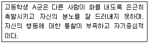
- 2-3
- 2-7
- 3-4
- 4-9
- 6-9
(정답률: 75%)
66. 객관적 성격검사에 관한 설명으로 옳지 않은 것은?
- PAI는 MMPI와 달리 4점 척도로 평정한다.
- TCI에서 사회적 민감성은 성격척도에 해당된다.
- PAI의 비지지(NON) 척도는 치료고려 척도에 해당된다.
- MBTI의 각 유형별 특징은 주기능, 부기능, 3차기능, 열등기능으로 구분할 수 있다.
- NEO-PI-R에서 개방성이 높으면 상상력이 풍부하고 창조적인 특성을 보인다.
(정답률: 65%)
67. MMPI-2의 Harris-Lingoes 소척도 가운데 임상척도 4번과 8번에 공통으로 포함되는 것은?
- 냉정함
- 내적 소외
- 피해의식
- 사회적 소외
- 자아통합 결여-억제부전
(정답률: 67%)
68. K-WAIS-Ⅳ의 소검사 '숫자', '산수', '동형찾기' 점수에 공통적으로 영향을 미치는 요인으로 가장 적절한 것은?
- 불안
- 계획능력
- 정규교육
- 세부에 대한 강박적 염려
- 시간압력 하에서의 수행능력
(정답률: 48%)
69. K-WISC-Ⅳ를 해석하는 일반적인 순서로 올바른 것은?
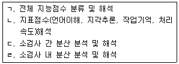
- ㄱ-ㄴ-ㄷ-ㄹ
- ㄱ-ㄴ-ㄹ-ㄷ
- ㄱ-ㄷ-ㄹ-ㄴ
- ㄴ-ㄱ-ㄷ-ㄹ
- ㄴ-ㄱ-ㄹ-ㄷ
(정답률: 66%)
70. 객관적 및 투사적 심리검사에 관한 설명으로 옳지 않은 것은?
- 객관적 검사의 경우, 투사적 검사에 비해 수검자가 방어적 반응을 하기 더 어렵다.
- 투사적 검사의 경우, 객관적 검사에 비해 반응의 독특성이 잘 나타난다.
- 투사적 검사의 경우, 객관적 검사에 비해 평가자에 따라 결과 해석이 다양하다.
- 객관적 검사의 경우, 투사적 검사에 비해 신뢰도가 높은 편이다.
- 투사적 검사의 경우, 객관적 검사에 비해 실시, 채점, 해석 시 전문성이 더 요구된다.
(정답률: 75%)
71. 심리검사를 실시할 때 가장 적절한 선택은?
- 지능을 알아보기 위해 SCT를 실시하였다.
- 적응장애를 알아보기 위해 MBTI를 실시하였다.
- 기질적 뇌손상을 알아보기 위해 16PF를 실시하였다.
- 불안을 알아보기 위해 BAI를 실시하였다.
- 품행장애를 알아보기 위해 BGT를 실시하였다.
(정답률: 61%)
72. 심리검사 및 평가에 관한 윤리사항으로 옳은 것을 모두 고른 것은?
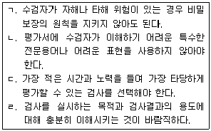
- ㄱ, ㄴ, ㄷ
- ㄱ, ㄴ, ㄹ
- ㄱ, ㄷ, ㄹ
- ㄴ, ㄷ, ㄹ
- ㄱ, ㄴ, ㄷ, ㄹ
(정답률: 53%)
73. 면접법에 관한 설명으로 옳지 않은 것은?
- 인간중심상담에 근거한 경우 일반적으로 진단을 위한 구조적 면접보다 비구조적 면접을 더 선호한다.
- 수검자가 혼란이 심하고 통찰이 없는 경우 폐쇄형이나 선다형 질문보다 개방형 질문이 더 효과적이다.
- 개방형 질문으로 시작해서 이후 폐쇄형 질문으로 접근하는 것이 바람직하다.
- 면접의 목적을 효과적으로 달성하기 위해서는 라포 형성이 매우 중요하다.
- 구조적 면접은 비구조적 면접에 비해 다량의 자료를 객관적, 체계적으로 수집할 때 유용하다.
(정답률: 47%)
74. 행동평가에 관한 설명으로 옳은 것은?
- 검사 시의 행동평가는 전체 행동 영역에 대한 대표성을 지닌다.
- 행동평가는 외적 환경요인보다 내적 개인요인에 의한 문제를 파악하는 데 더 적절하다.
- 행동평가는 심리측정적 속성이 충분히 검증되었다는 장점이 있다.
- 행동평가 시 면접은 행동의 변화가 발달과정에 의해 발생한다는 가정에 기초한다.
- 행동평가 시 면접의 일반적 목표는 관련있는 목표 행동을 확인하고 추가적 행동평가 절차를 선택하는 것이다.
(정답률: 67%)
75. 정신상태검사(Mental Status Examination)에 포함된 영역으로 옳은 것을 모두 고른 것은?
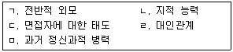
- ㄱ, ㄴ
- ㄷ, ㄹ
- ㄱ, ㄴ, ㄷ
- ㄴ, ㄹ, ㅁ
- ㄱ, ㄴ, ㄷ, ㅁ
(정답률: 34%)
4과목: 이상심리
76. 운동 및 주의에 관여하며, 파킨슨병이나 조현병과 관련이 있는 신경전달물질은?
- 도파민
- 코티졸
- 세로토닌
- 엔돌핀
- 노르에피네프린
(정답률: 74%)
77. 다음에서 설명하는 치료방법은?
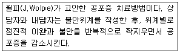
- 홍수법
- 체계적 둔감법
- 단계적 강화법
- 역설적 의도
- 모델링
(정답률: 83%)
78. 이상행동의 분류에 관한 설명으로 옳지 않은 것은?
- 범주분류는 흑백 논리적인 특성이 있다.
- 분류체계는 신뢰도와 타당도에 근거하여 평가된다.
- DSM-5는 차원정보와 범주정보를 모두 고려한다.
- 차원분류는 정상행동과 이상행동이 질적 차이에 따라 구분된다고 가정한다.
- 분류체계는 범주와 차원으로 나눌 수 있다.
(정답률: 62%)
79. DSM-IV-TR에 비해 DSM-5에서 달라진 점으로 옳은 것을 모두 고른 것은?
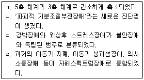
- ㄱ
- ㄴ
- ㄱ, ㄴ
- ㄴ, ㄷ
- ㄷ, ㄹ
(정답률: 28%)
80. DSM-5의 외상후 스트레스장애에 관한 설명으로 옳지 않은 것은?
- 과각성이 나타난다.
- 진단 시에는 해리 증상의 여부를 명시해야 한다.
- 침습 증상에는 수면 시작의 어려움이나 불안정한 수면이 포함된다.
- 외상 사건이 친한 친구에게 일어난 것을 알게 된 후에도 발생할 수 있다.
- 아동기를 포함해서 어느 연령대에서도 발생 가능하다.
(정답률: 60%)
81. P군의 증상에 적절한 DSM-5 진단명은?
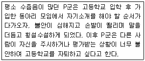
- 공황장애
- 범불안장애
- 광장공포증
- 분리불안장애
- 사회불안장애
(정답률: 92%)
82. DSM-5의 신체증상장애에 관한 설명으로 옳지 않은 것은?
- 건강에 대한 불안을 호소한다.
- 아동에게 흔한 증상은 복통, 두통, 피로이다.
- 인지이론에서는 신체증상의 2차 이득을 강조한다.
- 하나 이상의 신체증상을 고통스럽게 호소한다.
- 정신분석에서는 억압된 충동의 신체적 표현이라고 설명한다.
(정답률: 60%)
83. DSM-5의 해리장애에 관한 설명으로 옳지 않은 것은?
- 외상 후에 발생하는 경향이 있다.
- 의식, 기억, 정체성의 정상적 통합이 붕괴된다.
- 해리성 정체성장애는 다중성격장애로 불리기도 한다.
- 해리장애는 대체로 심리적 원인보다 신체적 원인이 더 크게 작용한다.
- 해리성 정체성장애, 해리성 기억상실, 이인성/비현실감 장애 등이 포함되어 있다.
(정답률: 66%)
84. 품행장애의 다중체계치료(Multisystemic Therapy)에 관한 설명으로 옳은 것은?
- 학교는 개입 대상이 아니다.
- 현재 중심, 행동지향적 개입이 원칙이다.
- 실존주의 기법을 주로 활용한다.
- 카즈딘(A. Kazdin)과 동료들이 개발했다.
- 보호소에 거주하면서 집단치료를 받아야 한다.
(정답률: 80%)
85. 주의력결핍 과잉행동장애에 관한 설명으로 옳은 것은?
- 약물치료는 주의력 향상과 충동성 감소의 효과가 있다.
- 메틸페니데이트, 암페타민과 같은 중추신경 억제제가 치료제로 사용된다.
- 행동치료는 주로 고전적 조건형성에 기초한 행동관리에 초점을 맞춘다.
- 환자군이 비교적 동질적이고, 병인도 뚜렷한 편이다.
- 심각하고 만성적인 주의력결핍 과잉행동장애 청소년에 대해서는 우선적으로 부모 훈련이 고려된다.
(정답률: 62%)
86. DSM-5의 적대적 반항장애에 관한 설명으로 옳지 않은 것은?
- 대개 청소년기 이후에 발병한다.
- 증상은 적어도 6개월 동안 지속되어야 한다.
- 주의력결핍 과잉행동장애와 함께 나타나는 경우가 많다.
- 분노/과민한 기분, 논쟁적/반항적 행동 또는 보복적 양상이 나타난다.
- 이 진단을 고려할 때 또래에서 보이는 정상적인 수준의 반항과 자기주장을 구분하는 것이 필요하다.
(정답률: 47%)
87. 다음 증상에 적절한 DSM-5의 진단명은?
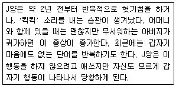
- 특정학습장애
- 발달성 협응장애
- 투렛장애
- 지속성 운동 또는 음성 틱장애
- 상동증적 운동장애
(정답률: 44%)
88. DSM-5의 신경발달장애 범주에 관한 설명으로 옳은 것을 모두 고른 것은?
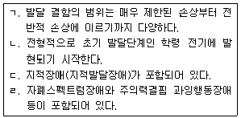
- ㄱ
- ㄱ, ㄴ
- ㄷ, ㄹ
- ㄴ, ㄷ, ㄹ
- ㄱ, ㄴ, ㄷ, ㄹ
(정답률: 81%)
89. 반사회성 성격장애에 관한 특성으로 옳지 않은 것은?
- 사회적 규범을 잘 따르지 않고 범죄를 저지르는 경우가 많다.
- 스스로 치료자를 찾아오는 등 치료에 대한 동기가 강한 편이다.
- 정직성, 의리가 없기 때문에 지속적이거나 친밀한 관계를 맺기가 힘들다.
- 가정이나 직장에서 책임을 지지 않으며, 자신의 이익을 위하여 타인을 교묘하게 이용한다.
- 알코올과 마약 등의 중독자와 교도소에 수감되어 있는 수용자에게 흔한 편이다.
(정답률: 88%)
90. 다음에 제시된 특징에 해당하는 성격장애는?
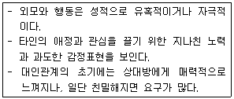
- 경계성 성격장애
- 연극성 성격장애
- 편집성 성격장애
- 회피성 성격장애
- 자기애성 성격장애
(정답률: 83%)
91. DSM-5에서 C군 성격장애에 해당하는 것을 모두 고른 것은?
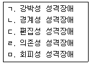
- ㄱ, ㄴ
- ㄱ, ㄷ
- ㄷ, ㄹ
- ㄱ, ㄹ, ㅁ
- ㄴ, ㄷ, ㅁ
(정답률: 59%)
92. 주요우울장애의 진단기준에 관한 설명으로 옳은 것을 모두 고른 것은?
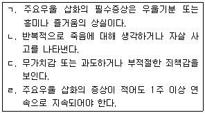
- ㄱ, ㄴ
- ㄱ, ㄹ
- ㄱ, ㄴ, ㄷ
- ㄴ, ㄷ, ㄹ
- ㄱ, ㄴ, ㄷ, ㄹ
(정답률: 62%)
93. 양극성 및 관련 장애에 관한 설명으로 옳지 않은 것은?
- 양극성 장애는 제Ⅰ형과 제Ⅱ형으로 구분된다.
- 가벼운 조증상태가 지속되는 경우를 경조증이라 한다.
- 제Ⅰ형 양극성 장애는 조증 삽화가 적어도 1주일 이상 지속되어야 한다.
- 제Ⅰ형 양극성 장애는 유전과 같은 생물학적 요인이 강한 편이다.
- 제Ⅱ형 양극성 장애는 경조증 삽화가 적어도 1주일 이상 지속되어야 한다.
(정답률: 50%)
94. 도박중독에 관한 설명으로 옳지 않은 것은?
- 도박중독자는 도박문제 이외에 흔히 재정적 문제와 법적 문제도 함께 갖고 있다.
- 도박문제가 심각하거나 자살에 대한 위험성이 있을 때라도 입원치료는 바람직하지 못하다.
- 학습이론에서는 도박행동을 모방학습과 간헐적으로 돈을 따는 강화기제로 설명한다.
- 인지이론에서는 도박중독자가 돈을 따게 될 주관적 확률을 실제보다 높게 평가하며, 비현실적이고 미신적인 인지적 왜곡을 한다고 본다.
- 도박중독자는 원하는 흥분을 얻기 위하여 점점 더 많은 액수의 돈을 가지고 도박하려는 욕구가 있고, 도박을 줄이거나 중단하려고 할 때는 안절부절 못하고 짜증을 내기도 한다.
(정답률: 92%)
95. DSM-5에서 다음의 특징을 보이는 장애는?
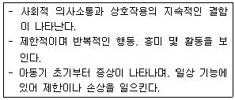
- 운동장애
- 특정학습장애
- 자폐스펙트럼장애
- 의사소통장애
- 주의력결핍 과잉행동장애
(정답률: 87%)
96. 품행장애에 관한 설명으로 옳지 않은 것은?
- 남녀 대부분 만14세∼16세에 발병하는 경향이 있다.
- 품행장애 증상이 약하고, 공존하는 정신병리가 없고, 지능이 정상인 경우 예후가 좋다.
- 치료자는 부모, 가족, 교사, 지역사회 등 다각적인 치료 프로그램으로 접근하는 것이 좋다.
- 문제행동이 어린 나이에 시작되고, 문제행동의 수가 많은 경우에는 성인기에 반사회성 성격장애로 발전될 수 있다.
- 반복적으로 폭력이나 방화, 도둑질, 거짓말, 가출 등과 같은 무책임한 행동을 하여 타인을 고통스럽게 한다.
(정답률: 56%)
97. 성도착증(변태성욕장애)에 해당하는 것을 모두 고른 것은?
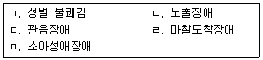
- ㄱ, ㄴ
- ㄷ, ㅁ
- ㄱ, ㄷ, ㄹ
- ㄴ, ㄷ, ㅁ
- ㄴ, ㄷ, ㄹ, ㅁ
(정답률: 91%)
98. 조현병 환자의 치료 및 재활개입에 관한 설명으로 옳지 않은 것은?
- 환자에게 개인치료와 집단치료, 가족치료 등이 사용될 수 있다.
- 환자가 사회에 잘 적응하도록 돕기 위해서 정신 재활개입을 의뢰한다.
- 환자가 환각이나 망상 등의 정신병적 증상을 보인다면 약물치료를 받도록 병원에 의뢰한다.
- 손상된 대인관계를 회복하여 일상에서 독립된 생활기능을 향상시키기 위한 사회기술훈련을 실시한다.
- 심리치료를 할 경우에는 환자가 정신병적 증상이 있더라도 약물치료는 하지 않는다.
(정답률: 83%)
99. 조현병 스펙트럼 및 기타 정신병적 장애에 속하지 않는 것은?
- 망상장애
- 조현양상장애
- 순환성장애
- 조현정동장애
- 단기 정신병적 장애
(정답률: 60%)
100. 다음 증상에 적절한 성격장애는?
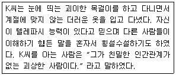
- 분열형 성격장애
- 분열성 성격장애
- 편집성 성격장애
- 경계성 성격장애
- 자기애성 성격장애
(정답률: 92%)